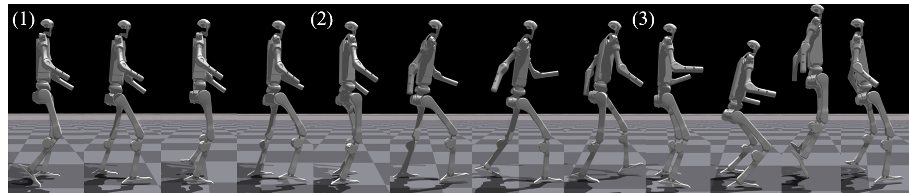
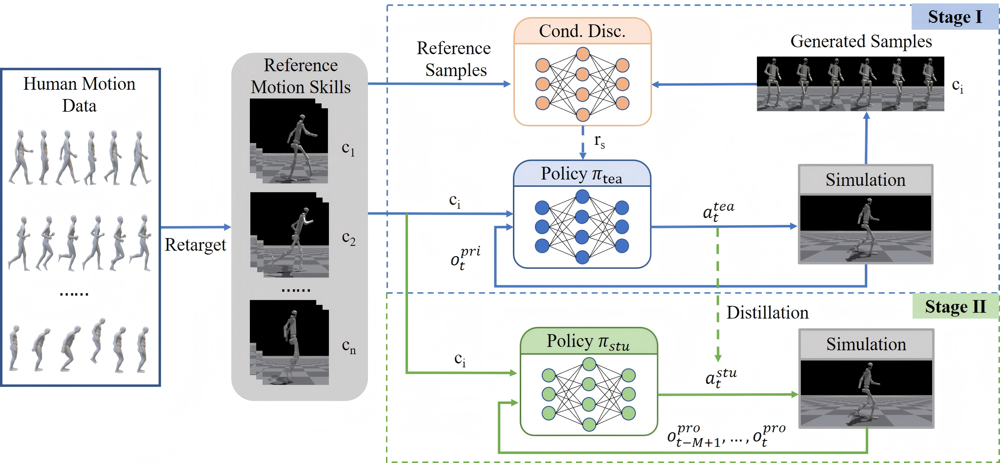
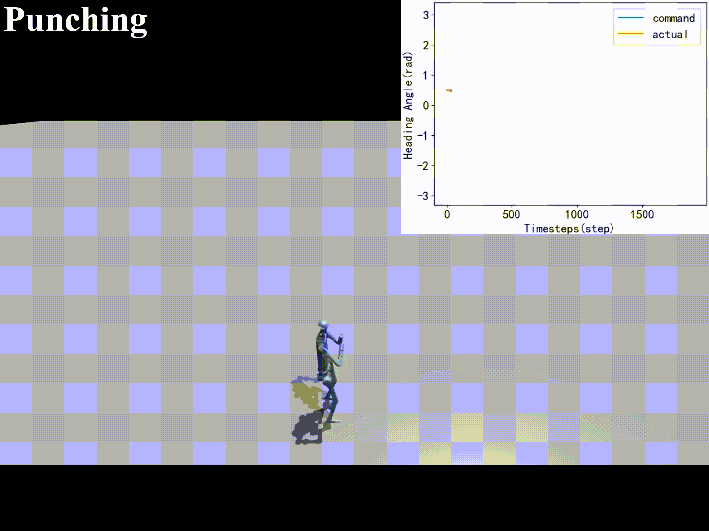
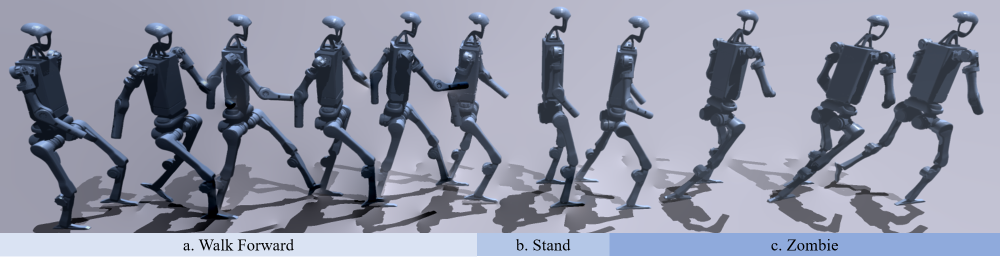
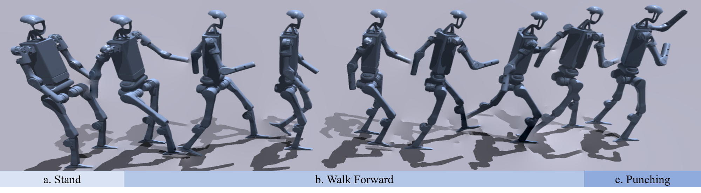
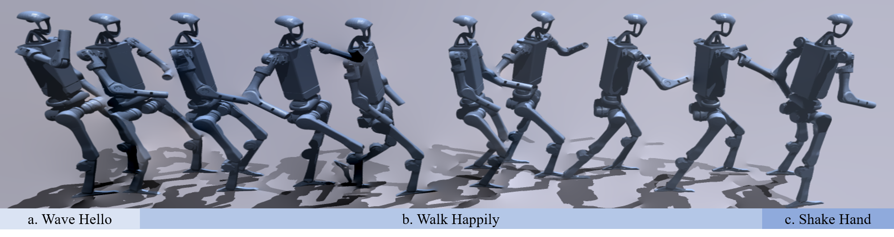

Overview


HAML aims at learning versatile and anthropomorphic humanoid motion skills via a single policy from reference human motion data. During training, the conditional discriminator indirectly regulates the motion state transitions generated by the policy. After the first training stage, a policy network with integrated multiple motion skills is available. This policy is used as a teacher policy in the second stage and is trained to obtain a deployable student policy through knowledge distillation.
Visualization of Heading Control
HAML allows finer motion skill control by incorporating additional task commands during policy training.

Visualization of Different Tasks
H-Locomotion

H-Multiwalk

Q-Locomotion

H-Interaction

Examples of Motion Transition



Deployment
Punch

Stable Stand to Punch